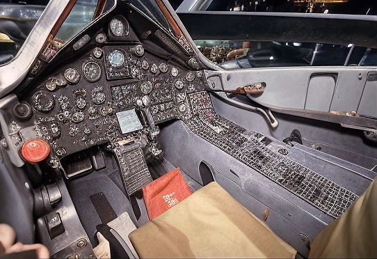
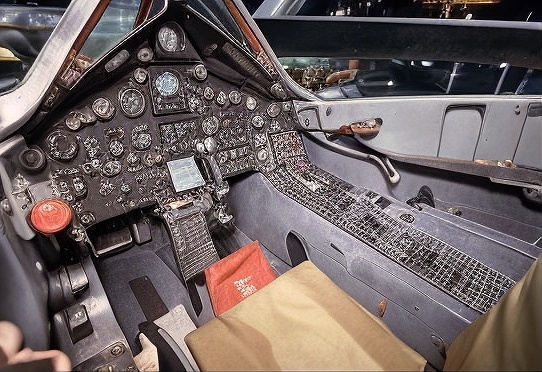
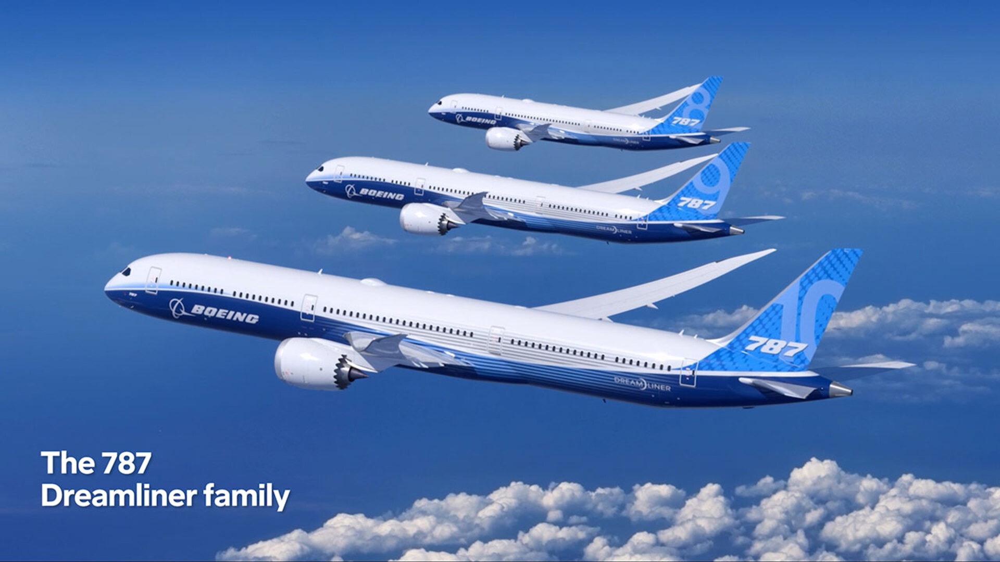
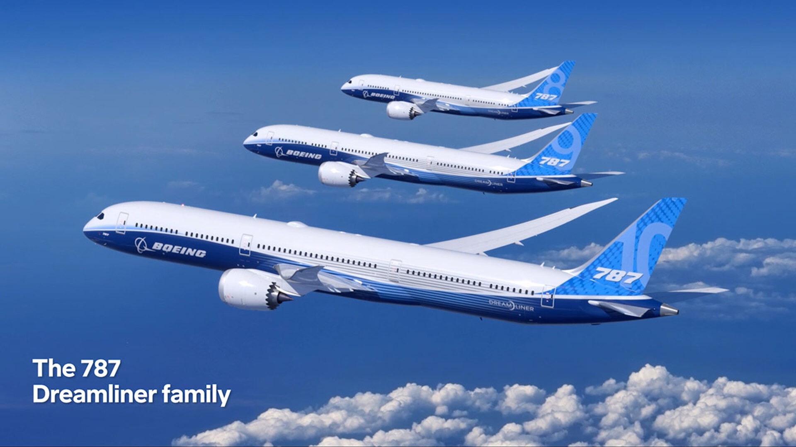

Jets like the Lockheed SR-71 Blackbird and MiG-25 "Foxbat" fly at speeds over Mach 3.
 

The Messerschmitt Me 262 was the first jet fighter in World War II.


The F-35 and F-22 use stealth technology to be invisible to radar.

Jets like the Sukhoi Su-57 and F-35 offer advanced technology and high maneuverability.

The Concorde flew at Mach 2, twice the speed of sound.

The Boeing 787 and Airbus A350 enable long flights with high efficiency.
 

The F-35 Lightning II costs around 100 million USD.


New jets like the Boeing X-51 aim for speeds of Mach 5 and above.


Private jets like the Gulfstream G650 offer luxury and comfort.